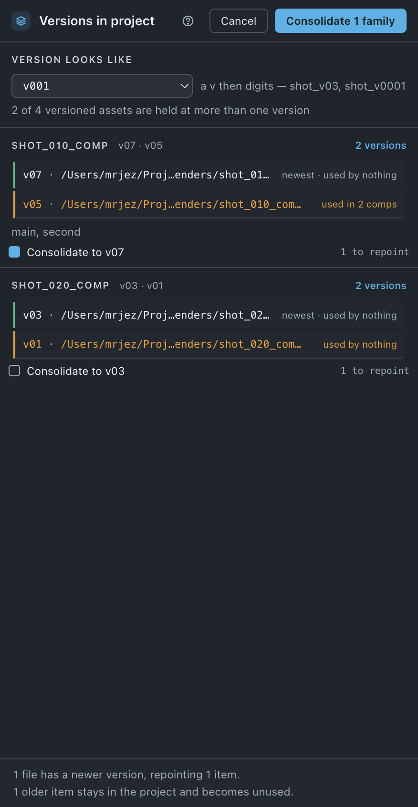

Versions
Lists every asset the project is holding at more than one version, says which comps use which, and can repoint every use to the newest.
Use it when
- Two comps look different and you suspect one of them is still built on the old plate.
- A project has been through three hands and nobody knows which version it is actually rendering.
- A delivery arrived twice, a month apart, and both are in the project.
- You are about to hand the project on and want everything on one version.
What it does
Reads the footage list and groups items whose names differ only by a version number. Where the project holds a family at more than one number, it draws that family: every version in the project, which comps use each one, and which is newest. Tick a family and press Consolidate, and every use of an older version is repointed at the newest one the project already has. Nothing on disk changes and nothing is read from disk — every fact on this sheet is in the project already.
What it does not do: it does not look on disk, so it cannot find a newer version that has not been imported — that is Update assets. It does not delete the item it repointed away from. And it never picks between two files claiming the same version.
Do it
- Press the Versions tile. There is nothing to scan and nothing to wait for.
- Check Version looks like at the top of the sheet — it decides what counts as a version number, and it is the same setting the Import and Update sheets read.
- Read the line under it: n of n versioned assets are held at more than one version.
- Read each family. Every version the project holds is a row, and under it the comps that use that version.
- Tick Consolidate to v07 on the families you want, and press Consolidate n families.
Scope. The whole project. There is no selection scope — the question is about the project. Footage the project cannot find is skipped: repointing a broken reference at a file nobody has verified is how a relink goes wrong quietly, so Relink comes first.

What you'll see
| Option | What it means |
|---|---|
| Version looks like | v001 — a v then digits. _001 — padded digits with no v. either — both. One setting, shared with Import assets and Update assets; changing it here changes it there. |
| A family | One band per family: the stem as its heading, the versions held beside it, and a n versions badge. |
| A version row | The version and its path, then either newest · used in n comps, used in n comps, or used by nothing. The comps are named under the row, four of them and then + n more. |
| Consolidate to v07 | The tick, one per family, with the number of items it would repoint on the right. |
Notes it may raise, and what they mean:
- nothing in the project has a version in its name and n versioned assets · every versioned asset is held once — two different silences. The first means the scheme found no versions at all; the second means it found them and every one is held once.
- tick a family to consolidate it · nothing in what is ticked can be repointed — the button's reason, on the button.
- stem has n files at v07 and was left alone — nothing says which one is the asset, and picking wrong changes a render silently.
- n older items stay in the project and become unused. Nothing is deleted here — Remove unused takes them.
Undo
One ⌘Z. Nothing on disk changes at any point — only which file each item points at.
Watch out
Things you might not think to do
- Audit and press nothing. The list is the product. Which comps are on which version is worth knowing whether or not you consolidate.
- Check a project before you hand it on. Two versions of one plate in a project is the thing the next person will not notice until they render.
- Read it after a partial update. Updating a selection rather than the whole project leaves exactly this shape behind, on purpose — this is where you see it.
Pairs with
Update assets answers the disk half — is there a newer version out there. Relink comes first when something is missing. Unused takes the items a consolidate leaves behind.